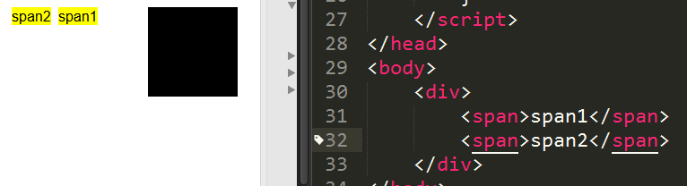
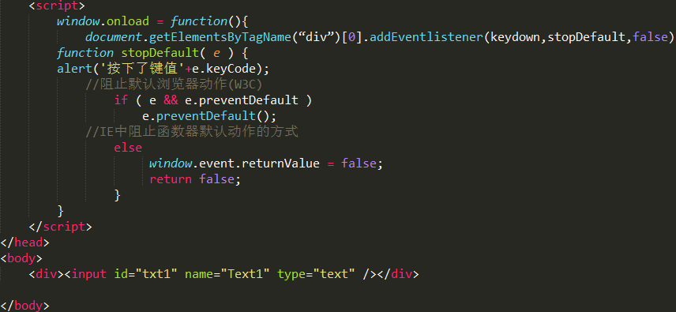
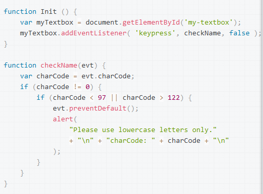

时间总是过得很快。这一周又过去，这个星期前半部分主要学习了JS一个非常常用的知识点----事件的委托。在啊哈磊老师博客网站上学习的算法，这个算法真的说的很生动形象。推荐算法还不算很懂的同学可以去看看。后半部分学习了：JS的很多更底层的东西，了解很多ES6的新的特性。复习了正则表达式的一些基本语法、了解了IE的haslayout和BFC（这里不是KFC哈）非常实用。今天分享的是事件相关的知识。
说到javascript就免不了说到事件，基本上和用户的交互都离不开事件。不管是用户移动鼠标还是打字，还是拖动滚动条，都可以触发一些事件。而浏览器的事件流是一个非常重要的概念。不去讨论那些古老的浏览器有事件捕获与事件冒泡的争议，只需要知道在DOM2中规定的事件流包括了三个部分事件捕获阶段、处于目标阶段、事件冒泡阶段
定义很简单，事件捕获，是从document元素开始，越高级的父级元素越早接收到事件，但是子节点也会继承父节点的事件。因此这是一个从上而下的过程。但是这里就有个问题，如果我们要捕获新加入的元素的事件是捕获不到的。 看这个例子： <ul class="containe r"> <li class="item"> <li class="item"> <li class="item"> <li class="item"> <!-- 这是新添加的li元素，但是该元素没绑定click事件 --> <li class="item new"> </ul>
像这样类似的事情，如果我们要得到每个ul的li里的文本的值。第一种方法，在我还不清楚事件委托的时候，我是先拿到所有的li的数组。然后得到他们的innerHTML。但是这样有一个不好地方，就是如果有1000个li我们就要拿拿1000个li节点。明显这样性能是不够好的。这时候事件委托解决了我们这个问题。
在事件捕获的过程中我们可能会遇到这样的问题。已经知道子节点会继承父节点的事件。有时候我们又不想让子节点触发事件。我的第一反应是：子节点不都是在父节点里面的吗？但是一些情况下子节点和父节点的定位是分离。像这样  虽然我这个夸张了一点，但是我如果绑定了以下事件就GG了 window.onload = function(){ var aDiv = document.getElementsByTagName("div")[0] aDiv.onclick = function(){ alert("你点了DIV标签？") } } 当我们点击span的时候也会发生click事件，这可能不是我们想要得。这里有一种CSS方法让子元素不触发事件 span{ pointer-events: none; } 当然这也是针对了点击的事件。
之前说到事件委托可以解决之前提出的问题，那么如何解决呢? 很简单就拿上面的例子来说。 //我们先拿到ul var aUl = document.getElementByClassName(“container”)[0]; //然后我们绑定事件委托 a Ul.onclick = function(event){ var target = event.target; if(target.className===item){ //class是保留字我们要使用className表示类名 //触发你要的function } } 在jquery中已经封装了一个On函数。可以让我们更方便的去实现这些东西 $('ul.container').on('click', 'li.item', function(event) { // dosomething }) // on中的第二参数就是我们的目标元素的选择器
说完了事件捕获，然后来说说事件冒泡这个坑。所谓事件冒泡，就是让DOM树最底层的目标元素最先接收到事件，然后往上传递，这是一个自下而上的过程。
注意：刚才我说了，子元素继承了父元素的事件可以搞事情，那么再事件冒泡的阶段当然也会出现类似的情况。当父级和子元素都绑定了相同的事件类型，但是执行不同的操作，那么当我们触发了子元素的事件。父元素的事件也会跟着触发了。看这个例子。
点击黄色区域的时候，两个事件都会触发。这就不是我们想要得结果。所以我们要阻止事件冒泡。
aUi.onclick = function(event){ event.stopPropagation()//标准 //ie e.candleBubble }看完事件有那么多坑，我就想到了浏览器的默认的行为也是喜欢搞事情的。就去查了关于浏览器默认行为的事情。看到说firefox浏览器比较诡异。虽然我使用的也是firefox，浏览器的默认的行为和其他浏览器不太一样。看下面的例子  按照程序运行，当按下一个键时候，会粗暴的alert你按的按键的键码。但是不会再输入框里面显示你按的字母。但是在firefox这样阻止默认事件却是行不通的。依然会有字母打出来。但是在其他的浏览器却异常的好使。
查找了一下阻止FF浏览器的默认行为，最多的还是使用e.stopPropagation() 阻止冒泡来解决。但是在这个例子里面却不能使用e.stopPropagation（）来阻止默认事件。经过百般调试，查阅了火狐自己的MDN的官方的文档的例子有一个类似的。是这样：
 在火狐浏览器却能正常执行这个功能。这里和我们的例子有两个不同的地方： 1、 这里使用的是keypress事件，并不是keydown事件。 2、 这里用的是event.charCode 而我们例子是event。keyCode。关于两者的区别这里有一篇文章说的挺好的。http://blog.sina.com.cn/s/blog_65c2ec5e0101blj6.html 把我们的例子keydown事件换成keypress事件就可以了，在其他浏览器也可以正常运行。但是两个编码是不同的。这是一个小坑，下次千万别踩了。